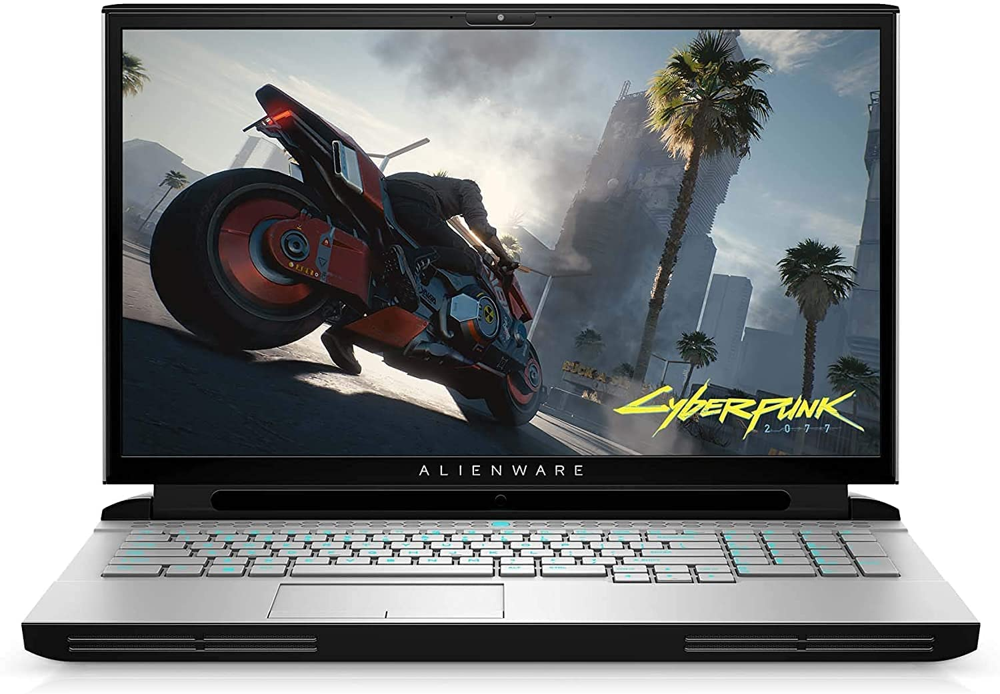
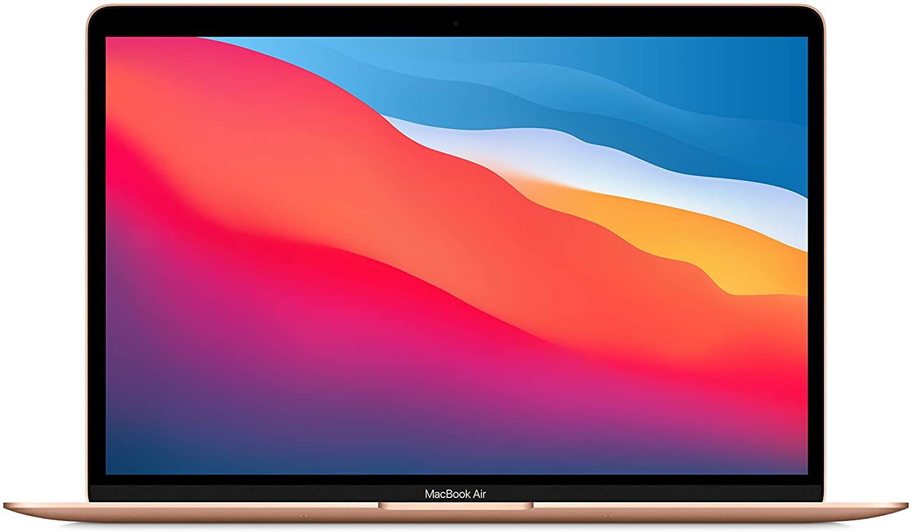
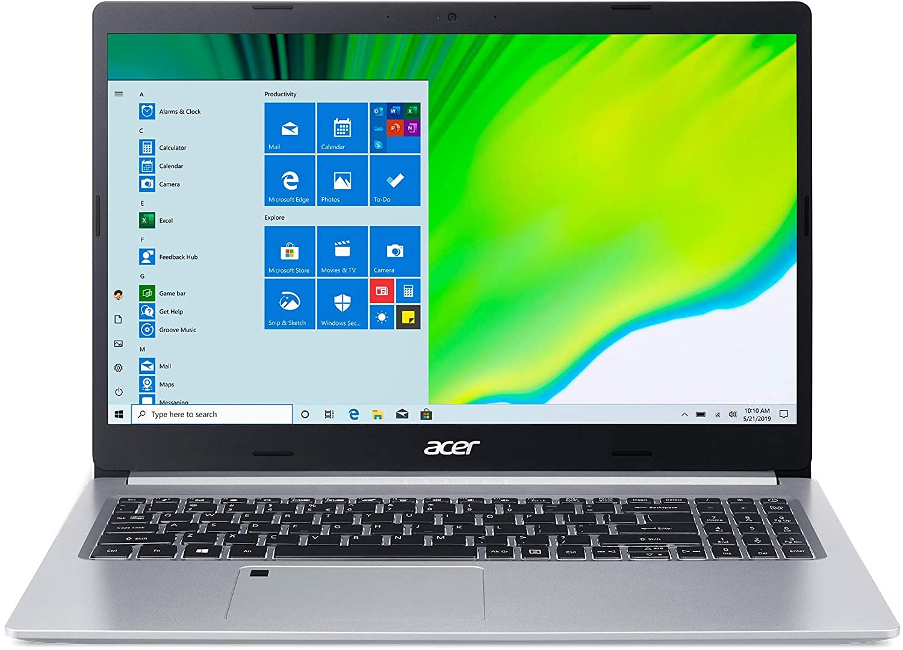
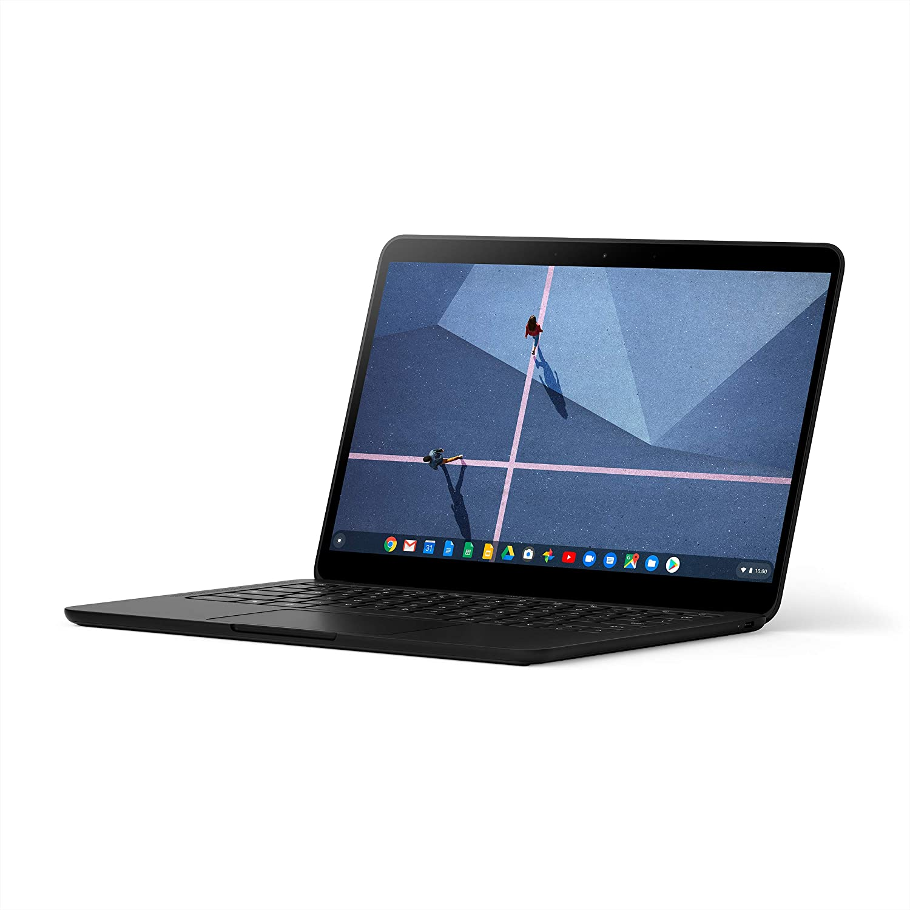

Dell Alienware 51M R2 Laptop
Click to View
The Dell Alienware 51M R2 Laptop has an Intel i7-10700 8-Core, 32GB RAM, 512GB PCIe SSD + 1TB HDD, RTX 2070 Super, a 17.3" Full HD Screen (1920x1080), WiFi, Bluetooth, Webcam, 2xUSB 3.0, 1xHDMI, and comes with Win 10 Home. Seal is opened for Hardware/Software upgrade only to enhance performance. 17.3" Full HD (1920x1080) 300Hz Refresh Rate IPS Display; Wi-Fi 6 AX1650 Wifi, Bluetooth, Ethernet LAN (RJ-45), Integrated Webcam, Backlit Keyboard,. 2 USB 3.0 Type-A, 1 USB 2.0, 1 HDMI, 1 mini Display Port, Thunderbolt 3 (Type-C), Micro SD Reader, 1 x Headphone/Microphone Combo Jack.
2020 Apple MacBook Air Laptop: Apple M1 Chip
Click to View
All-Day Battery Life – Go longer than ever with up to 18 hours of battery life. Powerful Performance – ake on everything from professional-quality editing to action-packed gaming with ease. The Apple M1 chip with an 8-core CPU delivers up to 3.5x faster performance than the previous generation while using way less power. Superfast Memory – 8GB of unified memory makes your entire system speedy and responsive. That way it can support tasks like memory-hogging multitab browsing and opening a huge graphic file quickly and easily. Stunning Display – With a 13.3” Retina display, images come alive with new levels of realism. Text is sharp and clear, and colors are more vibrant.
Acer Aspire 5 A515-46-R14K Slim Laptop
Click to View
Powerful Productivity: AMD Ryzen 3 3350U delivers desktop-class performance and amazing battery life in a slim notebook. With Precision Boost, get up to 3.5GHz for your high-demand applications. Maximized Visuals: See even more on the stunning 15.6" Full HD display with 82.58% screen-to-body, 16:9 aspect ratio and narrow bezels. Backlit Keyboard and Fingerprint Reader: Biometric fingerprint reader and Windows Hello sign-in options help keep your Acer PC secure. Internal Specifications: 4GB DDR4 on-board memory (1 slot available); 128GB NVMe solid-state drive storage (1 hard drive bay available) to store your files and media.
Google Pixelbook Go - Lightweight Chromebook Laptop
Click to View
Good to Go: Pixelbook Go lets you stay unplugged for up to 12 hours so you don't need to carry a charger. And when you do need a charge get up to 2 hours of use in just 20 minutes so you can keep going. Made to move Pixelbook Go is lightweight - Barely 2 pounds. It's 13 millimeter thin with a grippable design making it easier to carry. Get it done Fast: Pixelbook Go starts up in seconds and makes working a breeze. The 8th Gen Intel Core Processor is quick and responsive powering everything you do. And Chrome OS doesn't slow down over time so it always feels like new. Go without worry: Pixelbook Go is designed to prevent things from getting off track. The Titan C security chip and built-in anti-virus software help protect your data. And Chrome OS updates automatically with the latest features and security.